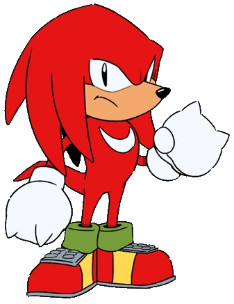

sobre o sonic




Sinopse:
Tem pelo azul cobalto, espinhos longos e grossos que lembram um cabelo, luvas brancas e grandes tênis vermelhos. Seu design foi inspirado em ícones como Mickey Mouse e Gato Félix, enquanto os sapatos foram baseados nas botas usadas pelo cantor Michael Jackson.